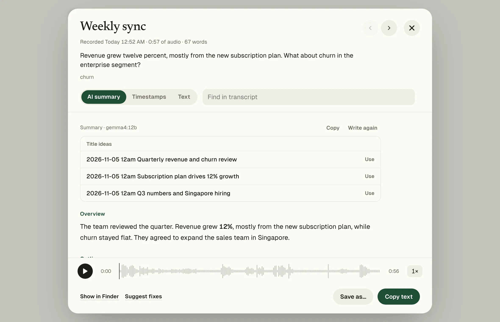

Stays on your Mac
Speech recognition runs on your own machine. Your audio isn't uploaded.
Free, no limits
No subscription, no minute caps, no account to make.
Plain files you keep
Text, subtitles, Word and Markdown, saved in a folder you choose.
A transcription app that works on your Mac, not on someone else's server.
Every kind of
recording covered
Korean, English, Japanese, Chinese, French, Spanish and German, or let Whisper detect the language. Parakeet is the fast option for English, French, Spanish and German.
Meetings and calls
Records you and the other people in Zoom, Teams or Meet, then labels who said what. No bot joins the call.
Summaries and notes
An overview, action items and three title ideas for every recording. Made on your Mac with Ollama, or with Claude if you choose. Notes can go straight into Obsidian.
Lectures and voice memos
Record with your Mac's microphone, or on your iPhone with Voice Memos. New memos are transcribed when they reach your Mac.
Recordings you already have
Drop in any audio or video file, or point Matita at a folder, such as a recorder's SD card, and new files are picked up.


How Matita compares
Otter, Granola and Wispr Flow are cloud services. Here is what that changes.
| Matita | Otter | Granola | Wispr Flow | |
|---|---|---|---|---|
| Where speech becomes text | On your Mac | Otter's cloud | A cloud transcription provider | Wispr's cloud |
| Files you already have | Any audio or video file | 3 files on the free plan | Not supported | Not supported |
| Free plan | Everything, no limits | 300 minutes a month, 30 minutes per conversation | Meeting history for 30 days | 2,000 words of dictation a week |
| Paid plan | None | $16.99 a month, or $8.33 a month billed yearly | $14 per user a month | $15 a month, or $12 a month billed yearly |
| Account | Not needed | Required | Required | Required |
Checked on 5 November 2026 against Otter pricing, Granola pricing and help, and Wispr Flow pricing and help. Prices in US dollars, per user, before tax. They may have changed since.
Running in a minute
Matita isn't signed with a paid Apple Developer ID, so macOS asks you to confirm once.
Download and drag
Open the .dmg and drag Matita into Applications.
Open it once
macOS says it can't check the app. Click Done.
Open Anyway
System Settings → Privacy & Security, then Open Anyway. You only do this once.
Prefer Terminal? xattr -dr com.apple.quarantine /Applications/Matita.app
Questions
Does anything leave my Mac?
Your audio and transcripts don't. Matita goes online to download a speech model the first time, to check GitHub for a new version, and, only if you choose Claude for summaries, to send the transcript to Anthropic.
How much space does it need?
About 100 MB for the app, plus one speech model on first use: 640 MB (Parakeet), 870 MB (Turbo 8-bit) or 1.6 GB (Turbo).
Does it run on Intel Macs or Windows?
No. Matita needs a Mac with Apple Silicon (M1 or later) and macOS 14 Sonoma or later. Recording the sound of other apps needs macOS 14.2.
Why does macOS warn me the first time?
macOS shows that warning for any app that isn't signed with a paid Developer ID. Matita's source is public, and each version is built from it on GitHub.
How do I remove it?
Quit Matita and drag it to the Trash. Models are in ~/whisper-models and settings in ~/whisper-app. Your transcripts stay in your Transcripts folder.
How can I help?
Report problems or share ideas on GitHub, or give the project a star.